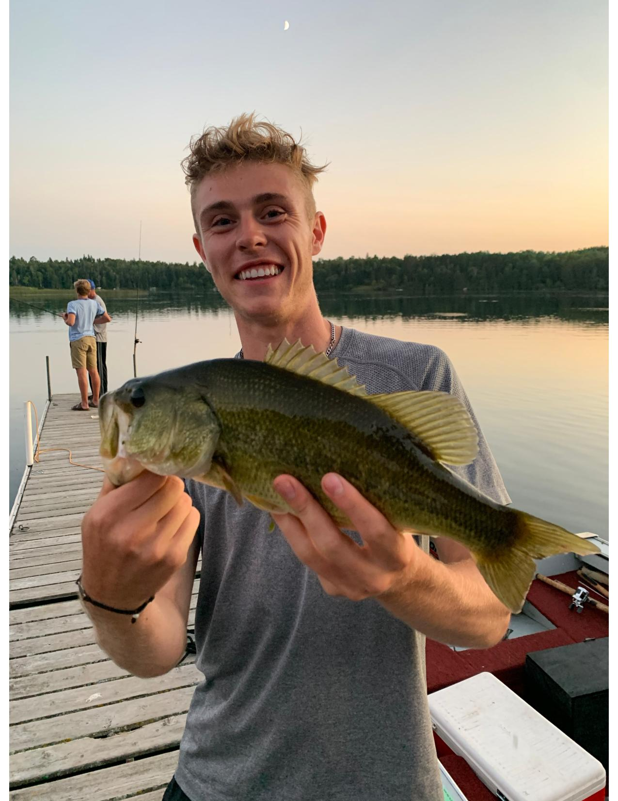
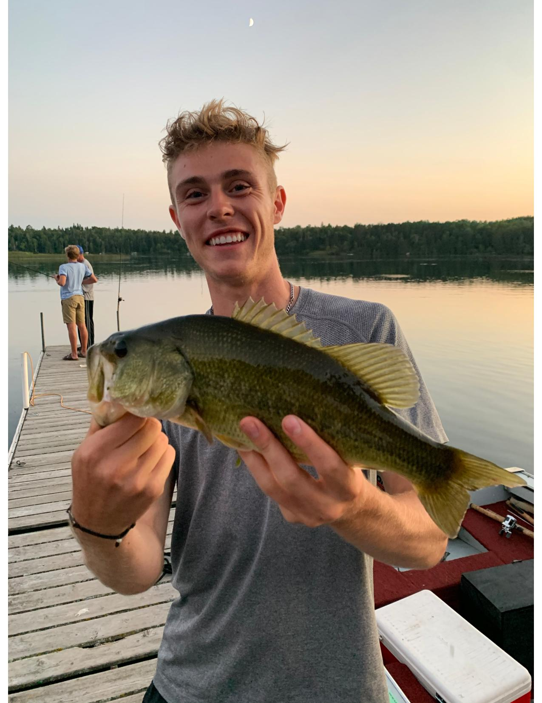

I have been going fishing ever since I was a child. My grandparents had a cabin in northern Minnesota that my family would go to several times during the summer months. My grandpa was an extremely avid fisherman and knew every single peak and valley of the bottom of the lake and where to catch the most fish. Ever since my grandparents sold their cabin, I have fished all throughout Eau Claire and the surrounding areas. I have attached some pictures from this summer of some of the fish I caught.
 

This first image shows a picture of a bass I caught up in Northern Minnesota with my uncle. I caught this fish using a frog and throwing it into the weeds. Fishing with scum frogs is fun because the fish jump completely out of the water to get the bait so it is always very exciting when a fish hits! This second fish was caught over the summer with a jig bait that I fashioned myself!